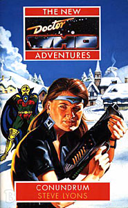

|
Conundrum
|
BASIC PLOT DOCTOR (Cameo by the Sixth and the Valeyard) COMPANIONS (Cameo by the Ungrateful Dead: Katarina, Sara and Adric) MATERIALISATION CIRCUIT PREPARATORY READING CONTINUITY REFERENCES Pg 1 "But I know you have a printer set up there, in that weird freezing room of yours, with the glass sphere and the rods and the pentagrams." This is, it will turn out, the Monk's TARDIS. The reason for the rods, pentagrams, sphere and low ambient temperature will be explained in No Future. "I know that bird-woman thing you keep has all sorts of powers." The Chronovore. "I even watched as it reconstructed this place from ashes." The Land of Fiction was destroyed in The Mind Robber, although the Doctor seemed to think that he may be able to return there at the end of The Well-Mannered War. That was Gareth Roberts being stroppy. Pg 4 "The skull-faced figure was holding a brightly lit globe, its gnarled hand reaching out of the picture as if to offer its prize to the onlooker." This sounds like the cover of Sometime Never... Uncanny. Pg 7 "And how your pet thingamajig tricked them into believing that, I'll never know." Not the most respectful way to refer to a Chronovore (The Time Monster, shortly to be seen in No Future). "So we're through the time-storm okay." This buffeted the crew on their way in to the land, and may have been similar to that which Fenric used to whip Ace off to Svartos before Dragonfire. "He had been like this since they had returned from the Titanic" The Left-Handed Hummingbird. "Strange dreams for one thing: a woman in red. And a door she couldn't open, for another." Ace's dreams and the locked door, dropped in here with very little subtlety or foreshadowing, are explained in No Future. "The recently repaired chameleon circuit." In the new-old TARDIS (the Alternate Third Doctor's one from Blood Heat). The chameleon circuit has been working intermittently ever since. Pg 8 "It looks like he's had a hard time of it recently. Someone playing with his past, meddling in the timestream, causing discrepancies... That's you, isn't it?" Yep. It's the Monk, and we're referring to Blood Heat, The Dimension Riders and The Left-Handed Hummingbird. Pg 9 "She had, after all, made herself a firm promise that the next time the Doctor took her to any place remotely suitable, she would pack her bags and go. Now she was suddenly back on Earth, in what just happened to be her favourite period of history, and it felt awfully like her bluff had been called." Benny has been thinking of leaving since Blood Heat, making her mind up more and more, particularly in The Left-Handed Hummingbird. She decides to stay on during this book. Pg 11 The Chameleon circuit, fully functional, turns the TARDIS into a gingerbread cottage. Nice. Pg 13 "'We've had experience with vampires,' Ace put in." The Curse of Fenric. "Although Blyth couldn't help but wonder about the large silver spoon which protruded from the Doctor's breast pocket." The Doctor's spoon reminds us of his penchant for playing them in Time and the Rani. Now why would we want to be reminded of that? Pg 17 Ace is introduced to a character called Mel Joseph. Weird, that she should meet someone else named Mel (who Ace now knows is dead, by the way - Heritage). Pg 24 Benny's dream: "Ace had tried to kill her - hurled her to the ground, choked the life out of her struggling body - and all the time, the Doctor had just stood calmly by and told her that it was all for the good of the universe and she really shouldn't be fighting it, you know." Deeply symbolic, but particularly appears to reference what happened to the Alternate Universe of Blood Heat, destroyed by the Doctor for the good of all, he alleged. Pg 26 "His deep dark thoughts, alas, were not meant for humankind to know... which is to say that I can't actually read them at the moment." He's not the first one to fail at reading the Doctor's head - see Ten Little Aliens for a similar example. This is also a joke on Virgin's writer's guidelines, which specifically forbade authors from writing the Doctor's POV. Pg 37 The Adventure Kids are modeled on Enid Blyton's The Famous Five which, when televised on ITV, had a child actor in it called Gary Russell, now author of some Who books and audio supreme at Big Finish. Hence one of these kids is meant to be him. This would not be the last time that authors would drop friends into their narratives. (Another of the actors was Michelle Gallagher, and one of the characters here is called Michelle.) Pgs 39-40 "'Is that a spoon in your pocket?' the sales assistant asked as the Doctor managed somehow to cram the Travel Scrabble set into the inside pocket of his jacket." The Doctor's pockets often appear to be dimensionally transcendental. See Alien Bodies for another possibility. Pg 41 "'He did this one a few years ago,' she explained. 'You know, when there was that big "Nightshade" nostalgia thing, the videos and the books and the repeats and all that.' Ace nodded. She had never actually seen the programme, but she'd once met its star." In Nightshade. The fictional programme Nightshade is the Who Universe's equivalent of our Quatermass. Pg 44 "A fierce look in his eye, a snapped command and a quick flick of an Arcturian driving licence and the Doctor had been ushered quickly through from the tiny reception area into the equally tiny but much more private offices to the rear." The creatures from Arcturus have previously been seen in The Curse of Peladon. They don't appear to have limbs which would make driving particularly easy, but I'm sure they manage somehow. Note that the spelling here has been corrected since Transit's infamous 'Acturus'. (It's also possible that it should be 'Arcturan', not 'Arcturian', but I can't back this up, so we'll let it go.) "He was still uncertain. 'Well, it looks authentic, I suppose.' 'And so it should, considering I spent almost ten minutes creating it last night.'" The Doctor forging his own credentials occurred previously in The Curse of Fenric. This time, gloriously, the first thing he does is admit that he forged them. Pg 61 The Doctor gets a tarot reading in which the first card is the Ace of Wands. No prizes for getting that reference. In the past, in Timewyrm: Revelation, the Doctor has been associated with the Hanged Man. Pg 68 "That she had salvaged to keep herself company on those long winter nights in the woods near the Academy. She couldn't help thinking how similar Sparky's story was to that of Batman's fifth Robin." Benny's background, as detailed in Love and War, included her time in the environs of the Academy. And isn't it weird that Benny can accurately recall the fate of Batman's fifth Robin, but in The Left-Handed Hummingbird, utterly failed to recognize Star Trek: The Next Generation. Pg 69 The tarot reading this time shows the Doctor as the Fool - an innocent traveler, which is actually fair, given that at the moment he has little clue as to what's going on regards the meddling about with time. Pg 70 More tarot: "'A journey,' Rosemary explained to him, 'from times of turbulence to a much more serene environment. The voyage may be a physical one, or it may simply be on an inner level, the passage of your heart from a state of sorrow to a time of great peace and contentment.'" This mirrors what was supposed to happen to the Doctor after No Future, where everything was calm again and the TARDIS crew were not at one another's throats, which is pretty much true, although it took a little while to get there. Pg 71 "Murder was on the Doctor's mind too, as he left Rosemary's shop, his head spinning with thoughts and ideas which... which... damn it, I can't see into them again!" Another comment on the original Virgin writers' guidelines that on no account were authors to show the Doctor's thought processes or write events from his point of view. This was relaxed once Peter Darvill-Evans wrote Deceit and discovered how damned difficult that made the whole process. Pg 76 "'Nine.' 'Leave it to me, I'll think of something...' 'Eight.' '... given time.' 'Seven' 'We're both going to die!' 'Six'" and so on. This countdown is very similar to one that occurs towards the end of Set Piece. Pg 87 "'For in just two more nights, with but two more sacrifices, our Master will arise!' And the assembled throng took up the familiar chant once more 'Thy will be done. Thy will be done. Thy will be done...'" This is a skit on similar sequences in both The Daemons and The Masque of Mandragora, among many other places both in and out of Doctor Who. "'I've fought vampires before, of course,' the Doctor had said, 'and not just the Haemovores either.'" State of Decay and Goth Opera, of course, and the Haemovores were from The Curse of Fenric. Pg 89 references the locked door in the TARDIS and the woman in the red dress in Ace's subconscious. See No Future. Pg 90 "She was sure too that the Doctor hadn't activated the Defence Indefinite Timeloop Option, projecting the TARDIS a split second into the future." He did activate this, the DITO, in The Dimension Riders. Pg 97 Ace's dream: "All aboard the good ship TARDIS, sailing out of Perivale Harbour on a voyage of discovery (but Perivale doesn't have a harbour, does it?) with Captain Ace at the helm, guiding that battered old ship and its mutinous crew through the rapids and whirlpools to the beckoning lights of the Isle of Svartos there in the middle distance (but Svartos wasn't an island was it?) Land ahoy!" A somewhat strange retelling of Ace's life before Dragonfire, where the continuity is (one presumes) deliberately wrong. Although 'mutinous crew' is about right. Pg 98 Rosemary's dreams: "That night she had the dream for the first time, and she was riding with her forebears on a broomstick high above the clouds, dancing with the Devil round a cauldron in the woods, choking and screaming as they burnt John Chambers at the stake. And they offered her a choice, pressed a pen into her hot, wet, clammy hands and told her to sign the Devil's Book if she wished their powers to be hers as well." This contains much of the imagery that Steve Lyons would later use when he wrote The Witch Hunters. Pg 104 "Comfortably settled on the stranger's lap, the cat yawned, stretched and purred with contentment before turning its unblinking green eyes almost accusingly upon its dumbfounded mistress." The Doctor had less luck with cats in Survival. This segment is strangely similar to Colin Baker's appearance on Blue Peter, when Jack, the world's least friendly TV animal, famous for biting and scratching the guests, succumbed to Mr. Baker's mysterious charms and sat calmly on his knee throughout. Presenter Janet Ellis (who appeared in The Horns of Nimon) couldn't believe her eyes. Pg 114 Ace and Benny begin to reminisce, and start by referencing Daleks and Blood Heat. And then it's continuity festival this week in the Land of Fiction: Pg 115 "Benny took another swig of her drink. 'Like he did with the Althosian system. Seven planets, millions of people, and he just sat back and watched that Time Lord friend of his obliterate them.'" The Pit. "'He took me from Iceworld, showed me the universe, guided me, protected me. At least, that's what I thought at the time. But it was all just part of the game. I was just part of the game! Him versus Fenric, him versus the Daleks, him versus the Timewyrm.'" Dragonfire, The Curse of Fenric, Remembrance of the Daleks, Timewyrm: Genesys, Exodus, Apocalypse and Revelation. Pg 116 "'Like he did with Jan,' said Benny, quietly. She remembered only too well the events on the planet of Heaven; the ones which had introduced her to the Doctor, while splitting Ace from him seemingly for good." Love and War. "'Like with Jan,' Ace confirmed. 'And with Robin before him.'" And this one was in Nightshade. "That's why I thought I could play the game against him, why I threw in with IMC when they wanted me to use him for a change." Lucifer Rising. Pg 119 "'So many contradictions. So many interpretations.' His voice hardened; his eyes did the same. 'Are you sure you have the right one? Sure enough to kill?'" This is very similar to the Doctor's famous speech from The Happiness Patrol. Pg 137 "And as she set off in pursuit, she also set a series of alarm bells off in her own head. She stopped inches short of the chessboard, her every instinct screaming at her to go no further. A thrown coin revealed the inevitable truth, exploding into shards as she skimmed it onto the nearest square." Just like in The Five Doctors, although deadlier. Pg 141 "'How do you know about that?' Mel thought for a moment. 'Sorry,' he said finally. 'Continuity error. You never did tell me that, did you?' This is getting just a little out of hand, I think." There is something gleeful about the way Lyons pulls the world apart and has the fictional author try and hold it together, but to actually use the phrase 'continuity error' is just joyous. Pg 145 Ace to Corrigan: "For that matter, look at you! I don't know why I'm even still talking to you, you're too bloody cliched to be real!" She obviously has never met Duggan from City of Death. Pg 148 "She had been in an accident. That must be it. A young boy called Boyle, with an upraised brick... a blow to the head... or was it a time-storm? Ripping straight through the lab, lifting her upwards, spiriting her far across the universe in the blink of an eye. No. That was a stupid idea." The brick incident appeared in Timewyrm: Revelation. The time-storm was the 'stupid idea' that carried her to Svartos before Dragonfire. It was, for the record, loosely based on the hurricane in Wizard of Oz, as Lyons makes plain further down the line. "I'm only sixteen, I'm too blasted young to die!' Very similar to Ace's words to Mel and Kane in Dragonfire. Death appears as a guest star, and not for the first time (Timewyrm: Revelation, Camera Obscura). Pg 151 is a strangely fictionalized version of the climax of The Dimension Riders in the TARDIS Library, with mention of the Garvond. Pg 155 "'I might've known you'd turn up next,' she told her mother, 'and you can just piss off again right back where you came from.'" Ace's mother appeared in The Curse of Fenric and will appear properly in Happy Endings. Pg 160 "Like the void itself, these strange metallic beings seemed somehow only too real to be anything but more of her enemy's tricks." The White Robots from The Mind Robber appear. Pg 162 "'All of those battles... when he blackmailed the world with his nerve-gas bomb, when we found out each other's identities, when he shipped arms to the fourteenth century...'" The first of these sounds like The Mind of Evil. The last sounds like something the Meddling Monk would do (as in The Time Meddler, particularly). Maybe there's a clue here. Pg 183 "His sixth self attacked him and threatened to kill him - 'Revenge!' for a sacrifice made with no choice. The Valeyard's face mocked him and boasted of victory; their methods more similar than he might have wanted - and Adric and Sara and poor Katarina were shouting 'Revenge!'" The idea that the Doctor killed his sixth self deliberately and trapped him in a room in his mind was introduced in Timewyrm: Revelation and finally resolved in The Room With No Doors. The Valeyard is from The Trial of a Time Lord (and Millennial Rites and Matrix), while the other deaths occurred respectively in The Dalek Masterplan, The Dalek Masterplan and Earthshock. Pgs 185-186 "He knew that from the moment he encountered Aslan, the talking lion who bade him Godspeed on the final leg of his journey." This is what Aslan did to Reepicheep in The Voyage of the Dawn Treader. Pg 187 "'Grandfather!' the voice cried." And we all think it's Susan, this being her first word in her appearance in The Five Doctors... Pg 195 ... But it's not: "'We thought you were gone forever!' shrieked Gillian delightedly. 'You're regenerated again,' enthused John, pulling at the Doctor's jacket with fascination as he sized up the Time Lord's unfamiliar appearance. 'I...' 'Never mind that,' Gillian interrupted. 'Grandfather, you've got to help us. The Kleptons are here...' '... and the Trods!' put in John." John, Gillian, the Kleptons and the Trods are all from the early First Doctor comic strips in TV Comic. John and Gillian also make a cameo appearance in Campaign and two schoolfriends of Susan's at Coal Hill School have these names in Time and Relative. On this occasion, the Doctor does what all sensible Doctor Who fans do regarding John and Gillian: he ignores them. Pg 202 "I've watched your first adventure here hundreds of times, and I never tire of his clowning and his witticisms." It seems everyone in these books has copies of the videos or DVDs (see Zeta Major, No Future). This is, of course, The Mind Robber. Pg 203 The character of Silver Fist, who we never meet, was a Cyberman. Pg 205 "'I understand that your [sic] murdered Alan Brown! "Hardly an interesting character", I believe you said.' 'Some sacrifices must be made,' the Writer admitted, 'in the name of entertainment.'" Not only is this chillingly predictive of the development of reality TV, it also reflects the events of Bad Wolf. Pg 209 "The Doctor sniffed loftily. 'I doubt if you've learnt a thing. For a start, you've got the formula all wrong. No corridors, no monsters and I haven't been imprisoned once!'" Fair point, both in terms of this story and the ones that he's lampooning. "'I put together some stories with your other personae too,' he continued, 'once the boss man showed me his videos of those. I even used some of your real companions, just the ones I liked.'" It doesn't surprise me in the least that the Master of the Land of Fiction was into FanFic, or that he's picky about his choice of companions. Bet he liked Adric. "'The fictional replicas may have been entertaining, but I always prefer the real McCoy.'" You know that the Seventh Doctor was played by Sylvester McCoy, don't you? Of course you did. And I bet you didn't think it could get any more self-aware. And yet... A small amount of modernizing since The Mind Robber means that we now get the story on computer paper, not ticker tape. Pg 211 "'I can reconstruct the missing Christmas episode of 'Professor X', relive the '76 invasion and the dramatization of Danny Pain's 'Fight against the Aliens'.'" Professor X is the Who Universe equivalent of, well, Doctor Who. The missing Christmas episode, then, may well turn out to be called 'The Feast of Steven'. Despite being a fictional character, Professor X will go on to appear in No Future. The reference to the '76 invasion and Danny Pain refers to the events of No Future. Pg 212 "'Alternatively, we need look no further than your own regenerative powers: a convenient deus ex machina if ever there was one.'" You said it. Pg 213 The Master of the Land of Fiction, just as in the Mind Robber, wants the Doctor to replace him. Pg 214 "'I will tell stories for the enjoyment of whoever is out there reading what your printer next door spews out, and will presumably suffer that person's terrible retribution if my attempts fail to entertain.'" Sounds like the Gods of Ragnarok from The Greatest Show in the Galaxy, and there's a reason that it does. Pg 229 "'Apart from this Writer bloke, I mean. Who does he write for?' 'Originally, the Gods of Ragnarok,' said the Doctor, solemnly. 'Old enemies of mine, beings with phenomenal powers and rather perverse ideas on the subject of entertainment.' 'Scumbags,' muttered Ace under her breath." The Greatest Show in the Galaxy introduced the Gods of Ragnarok, representations of either BBC executives, or perhaps just the viewing public. This is a nice piece of ret-conning here, which ties into the Doctor saying he'd fought them all through time. Pg 231 "'Time to leave,' he said." Very similar to the end of Remembrance of the Daleks. Pg 236 "One robot spoke, in a cold, flat voice. 'You are enemies of the Dredlox. You will be in-cin-er-at-ed! In-cin-er-ate!' And the chant was taken up, eerily, resoundingly." The Dredlox (also known as Incinerators) first appeared in Marvel comic's Power Man and Iron Fist #79 (March 1982). They bear a suspiciously uncanny resemblance to another famous alien species in both look and vocal pattern, but I can't quite remember which one right now... Pg 237 The Doctor continues to deconstruct his own life story: "'Any of the usual methods should do it - hypnotism, confronting evil with its own image, waving a sonic screwdriver at it...'" Actually, the Doctor has rarely hypnotized an enemy to defeat it. The second one is Kinda, the third much of the Fourth Doctor's time and, equally, much of the Ninth's. Pg 239 The machine: "All kinds of oddities had contributed to its composition; coat hangers, crisp packets, bus tickets, pens. The Doctor had often made things like this himself - in his third incarnation especially." Most memorably in The Time Monster (and The Quantum Archangel). Oh, how we laughed. Pg 240 The Doctor plays the spoons. Time and the Rani again. Pg 241 "Karen screamed as a car reared up in front of her, teeth gnashing where once had been its radiator." Much of the madness going on now is cartoon-influenced, suggesting Steve Lyons' later book, The Crooked World. Pgs 244-245 "Ace grinned and laughed derisively. 'An illusion. Another stupid illusion! Haven't you given up on all that crap yet?' A shudder seemed to ripple round the room. 'Obscenities too,' hissed another of the bureaucrats, 'in a book deemed suitable for consumption by minors.'" This reflects the furore that surrounded publication of the early Virgin books, particularly some of the more explicit language and goings-on in Transit, most notably, amongst others. Pg 245 "You are now, were once, have always been, worthless. A mere supporting character, your inspiration plucked from a film, modified for your new genre, and granted with a limited potential that you have long since outlived." In order: a little unfair, true, true, true and possibly true. Certainly people were beginning to think that the character of Ace was due to leave. She wouldn't for a long time, though. "Dorothy... Dorothy... caught in a time-storm, swept over the rainbow (something beginning with an M?). Landed on Iceworld, teamed with the Doctor, fought against Fenric (how could she not remember?)." Dragonfire, The Curse of Fenric. Ace is trying to remember her surname, which the NAs later established as 'McShane', while the PDAs (Tucker and Perry) have, for reasons known only to them, tried to change it to 'Gale'. This is resolved, sort-of, in Loving the Alien. The reason that Ace can't remember it now is because the BBC originally banned Virgin from giving her a surname. Pg 246 Ace returns to the TARDIS library from her memory of The Dimension Riders. Pg 247 "From the battered white cover, a face stared out at her. Her face. She gasped, flinched away, and let the book drop unimpeded to the ground. It landed atop a mound of similar volumes, each emblazoned with the same futuristic logo, with a title beneath. Names like 'Dragonfire', 'Love and War', 'Deceit'. The story of her life, reduced to paperback form." Ooh, clever. The book that she first grab holds of could be Silver Nemesis, Ghost Light, The Curse of Fenric, Prime Time, Loving the Alien, Timewyrm: Exodus, Timewyrm: Apocalypse or, the most likely candidate, Conundrum. It couldn't have been White Darkness, because the drawing that's supposed to be Ace on that one looks nothing like her. The others are, of course, Dragonfire, Love and War and Deceit. Pg 255 "She was desperately pushing buttons and pulling levers at the console, at the same time reaching out with her mind, trying to re-establish the link she had once had with the Time Lord's semi-sentient craft." This link was created in Blood Heat, and the Doctor has been trying to remove it, possibly explaining his wanton vandalism at the end of The Dimension Riders. Pg 256 The functioning Chameleon Circuit saves the day. Pg 257 References to Blood Heat and The Pit again. Pg 259 "'About an invasion of Earth in the year 1976. Except that in the history you and I know, such an event never occurred.'" This leads us neatly into No Future. Pg 260 "'We start,' said the Doctor, 'by trying to locate a man named Danny Pain.'" No Future. "'Right. Great. And after that, there'll be no one watching or reading about us anymore?' 'No one.' Benny smiled tightly, and they still avoided each others' eyes. She couldn't think of anything else to say so she left quietly, easing the door shut behind her in contrast to Ace's rather more explosive departure. 'Well,' muttered the Doctor when he was sure she was out of earshot, 'no one out of the ordinary, anyway.'" This breaks the fourth wall in much the way that the First Doctor did at the end of The Feast of Steven (The Dalek Masterplan). Pg 261 "Look on the bright side: this way, we get to have a sequel." It's called Head Games. OLD FRIENDS AND OLD ENEMIES NEW FRIENDS AND NEW ENEMIES The new Master of the Land of Fiction returns in Head Games, where he'll be named Jason.
CONTINUITY COCK-UPS PLUGGING THE HOLES [Fan-wank theorizing of how to fix continuity cock-ups] FEATURED ALIEN RACES FEATURED LOCATIONS On Pg 155, Ace finds herself in the White Void from episode one of The Mind Robber. On Pg 200, the Doctor returns to the domain of the Master of the Land of Fiction, which is just like it was before, as is the Forest of Words, which appears on Pg 207. IN SUMMARY - Anthony Wilson |
|
 |